NetScaler 10.5 Certificates
Navigation
- Here are three methods of creating certificates for NetScaler:
- If the server certificate is signed by an intermediate authority, import the intermediate certificate and bind it.
- Default Management Certificate Key Length
- Replace the management certificate and then force SSL access for management.
- Update certificates before they expire.
Convert .PFX Certificate to PEM Format
You can export a certificate from Windows and import it to NetScaler. However, Windows certificates can’t be imported on NetScaler in their native PFX format and must first be converted to PEM as detailed below:
- On the Windows server that has the certificate, run mmc.exe, and add the certificates snap-in.
- Right-click the certificate and click Export.

- On the Export Private Key page, select Yes, export the private key and click Next.

- On the Export File Format page, ensure Personal Information Exchange is selected and click Next.

- Save it as a .pfx file. Don't put any spaces in the filename.

- Back in the NetScaler Configuration GUI, on the left expand Traffic Management and click SSL. If the SSL feature is disabled, right-click it and click Enable Feature.
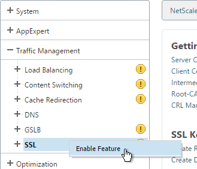
- Back in the NetScaler Configuration GUI, on the left expand Traffic Management and click SSL. If the SSL feature is disabled, right-click it and click Enable Feature.
- On the right pane, click Import PKCS#12 in the Tools section.
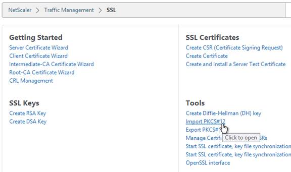
- In the Import PKCS12 File dialog box:
- In the Output File Name field, enter a name (e.g. Wildcard.cer) for a new file where the PEM certificate and key will be placed.
- In the PKCS12 File field, click Browse and select the previously exported .pfx file.
- In the Import Password field, enter the password you specified when you previously exported the .pfx file.
- Change the Encoding Format selection to DES3. This causes the new Output file to be encrypted.
- Enter a password for the Output file and click OK.
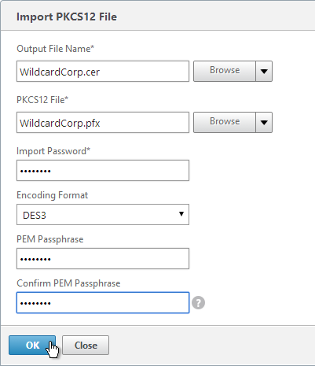
- If you browse to the /nsconfig/ssl directory on the NetScaler and view the new .cer file you just created, you’ll see both the certificate and the private key in the same file. You can use the Manage Certificates / Keys / CSRs link to view the files.
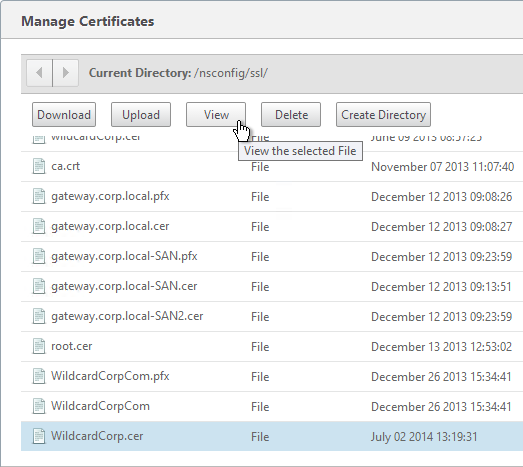
- Notice that the file contains both the certificate and the RSA Private key.
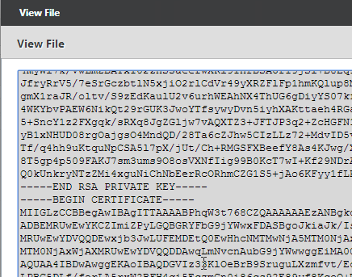
- On the left side of the NetScaler Configuration GUI, expand Traffic Management > SSL, and click Certificates.
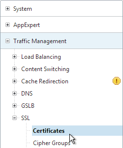
- On the right, click Install.
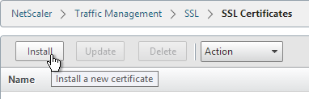
- In the Install Certificate dialog box:
- In the Certificate-Key Pair Name field, enter a friendly name for this certificate.
- In the Certificate File Name field, browse the appliance and select the .cer file you just created.
- In the Key File Name field, browse the appliance and select the same .cer file you just created. Both the certificate and the private key are in the same file.
- If the private key is encrypted, enter the password.
- Click Install. You can now link an intermediate certificate to this SSL certificate and then bind this SSL certificate to SSL Offload and/or NetScaler Gateway Virtual Servers.
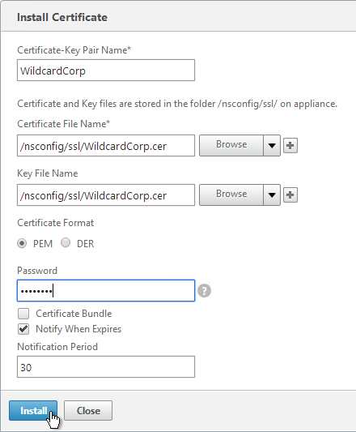
- To automatically backup SSL certificates and receive notification when the certificates are about the expire, deploy Citrix Command Center or NetScaler Management and Analytics System. Also see Citrix CTX213342 How to handle certificate expiry on NetScaler.
Create Key and Certificate Request
You can create a key pair and Certificate Signing Request directly on the NetScaler appliance. The Certificate Signing Request can then be signed by an internal or public Certificate Authority.
Most Certificate Authorities let you add Subject Alternative Names when submitting the Certificate Signing Request to the Certificate Authority and thus there’s no reason to include Subject Alternative Names in the Certificate Signing Request. You typically create a Certificate Signing Request with a single DNS name. Then when submitting the Certificate Signing Request to the Certificate Authority you type in additional DNS names. For a Microsoft Certificate Authority, you can enter Subject Alternative Names in the Attributes box of the Web Enrollment wizard. For public Certificate Authorities, you purchase a UCC certificate or purchase a certificate option that lets you type in additional names.
If you instead want to create a Certificate Signing Request on NetScaler that has Subject Alternative Names embedded in it as request attributes, see Citrix Blog Post How to Create a CSR for a SAN Certificate Using OpenSSL on a NetScaler Appliance. These instructions are performed on the NetScaler command line using OpenSSL. Or you can instead create a Subject Alternative Name certificate on Windows.
- On the left, expand Traffic Management, and click SSL.
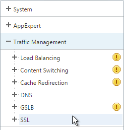
- On the right, in the left column, click Create RSA Key.
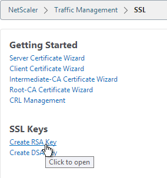
- Give the new .key file a descriptive name.
- Set the Key Size to 2048 bits
- Set the PEM Encoding Algorithm to DES3 and enter a password. This encrypts the key file.
- Click OK. You will soon create a certificate using the keys in this file.
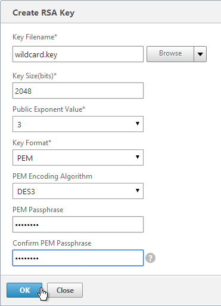
- On the right, in the right column, click Create CSR (Certificate Signing Request).
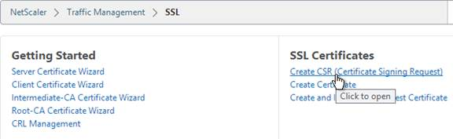
- In the Request File Name field, enter the name of a new .csr file.
- In the Key Filename field, browse to the previously created .key file.
- If the key file is encrypted, enter the password.
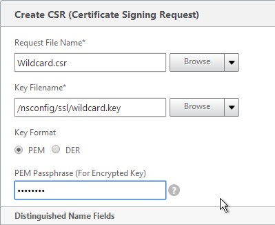
- In the State field, enter your state name without abbreviating.
- In the Organization Name field, enter your official Organization Name.
- Enter the City name.
- Enter IT or similar as the Organization Unit.
- In the Common Name field, enter the FQDN of the SSL enabled-website. If this is a wildcard certificate, enter * for the left part of the FQDN.
- Scroll down, and click OK.
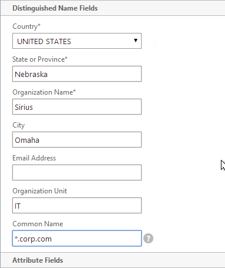
- On the right side of the right pane, click Manage Certificates / Keys / CSRs.
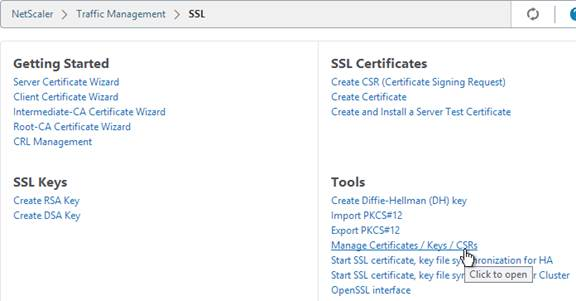
- Find the .csr file you just created, and View it.
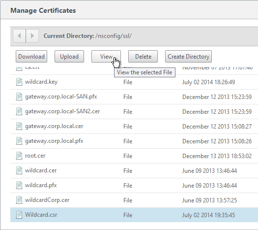
- Copy the contents of the file, and send it to the certificate administrator. Request the signed certificate to be returned in Apache or Base64 format.
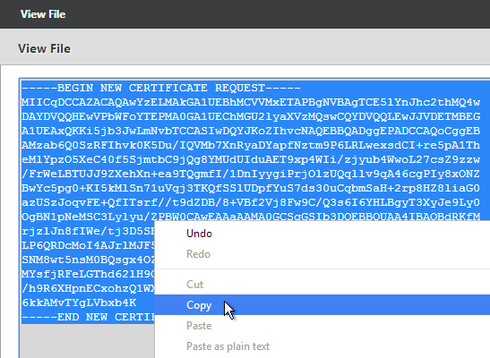
- After you get the signed certificate, on the left side of the NetScaler Configuration GUI, expand Traffic Management > SSL, and click Certificates.
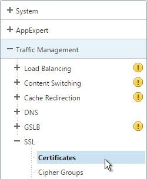
- On the right, click Install.
- In the Install Certificate dialog box:
- In the Certificate-Key Pair Name field, enter a friendly name for this certificate.
- In the Certificate File Name field, browse Local and select the Base64 (Apache) .cer (or .crt, or .cert) file you received from the Certificate Authority.
- In the Private Key File Name field, browse the appliance and select the key file you created earlier.
- If the key file is encrypted, enter the password.
- If desired, check the box next to Notify when expires.
- Click Install.
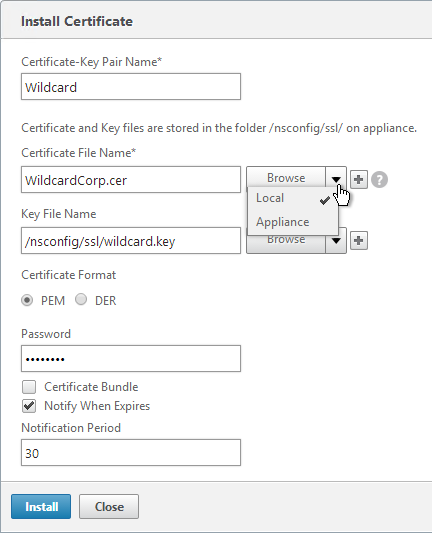
- The certificate is now added to the list. Notice the Days to Expire. You can now bind this certificate to any SSL Load Balancing, NetScaler Gateway, or SSL Content Switching Virtual Server.
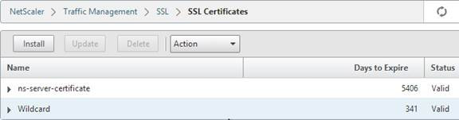
- To automatically backup SSL certificates and receive notification when the certificates are about the expire, deploy Citrix Command Center or Citrix NetScaler Management and Analytics. Also see Citrix CTX213342 How to handle certificate expiry on NetScaler.
Intermediate Certificate
If your Server Certificate is signed by an intermediate Certificate Authority, then you must install the intermediate Certificate Authority’s certificate on the NetScaler. This Intermediate Certificate then must be linked to the Server Certificate.
- Sometimes the public Certificate Authority will give you the Intermediate certificate as one of the files in a bundle. If not, log into Windows and double-click the signed certificate.
- On the Certification Path tab, double-click the intermediate certificate (e.g. Go Daddy Secure Certificate Authority. It’s the one in the middle).

- On the Details tab, click Copy to File.

- In the Welcome to the Certificate Export Wizard page, click Next.

- In the Export File Format page, select Base-64 encoded and click Next.

- Give it a file name and click Next.

- In the Completing the Certificate Export Wizard page, click Finish.

- In the NetScaler configuration GUI, expand Traffic Management, expand SSL, and click Certificates.
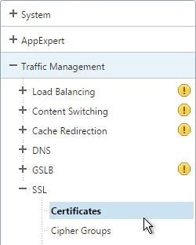
- On the right, click Install.
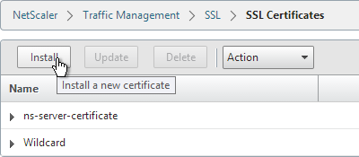
- Name it Intermediate or similar.
- Browse locally for the Intermediate certificate file.
- Click Install. You don’t need a key file.
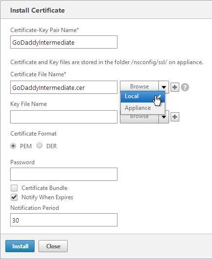
- Highlight the server certificate, open the Action menu, and click Link.
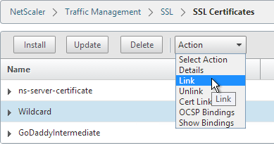
- The previously imported Intermediate certificate should already be selected. Click OK.
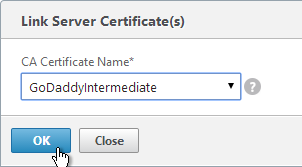
Create Certificate with NetScaler as Certificate Authority
If you don’t have an internal Certificate Authority, you can use NetScaler as a Certificate Authority. The NetScaler Certificate Authority can then be used to sign Server Certificates. This is a simple method for creating a new management certificate. The main problem with this method is that the NetScaler root certificate must be manually installed on any machine that connects to the NetScaler.
- On the left, expand Traffic Management, and click SSL.
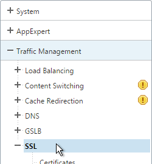
- On the right, in the left column, click Root-CA Certificate Wizard.
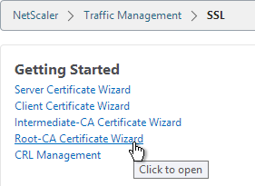
- In the Key Filename field, enter root.key or similar. This is a new file.
- In the Key Size field, enter at least 2048.
- Optionally, to encrypt the key file, change the PEM Encoding Algorithm to DES3, and enter a new password.
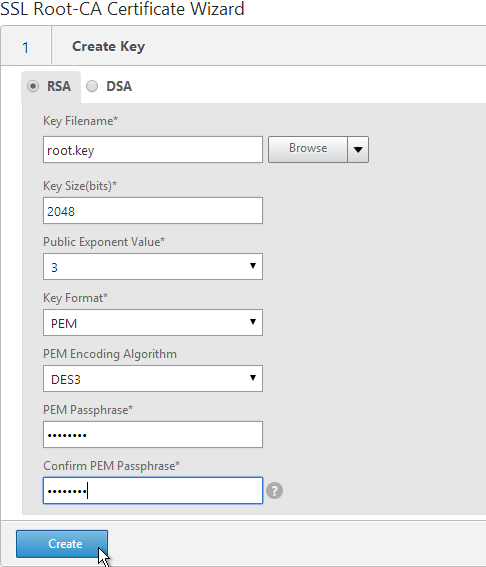
- Click Create.
- In the Request File Name field, enter root.csr or similar. This is a new file.
- If the key file is encrypted, enter the password.
- Scroll down.
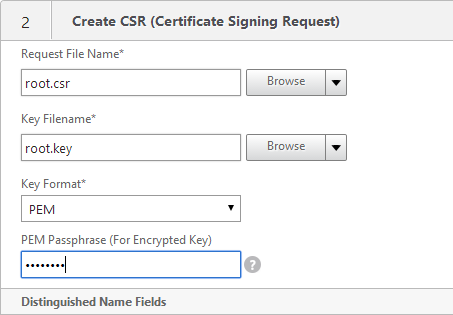
- In the State field, enter the non-abbreviated state name.
- In the Organization Name field, enter the name of your organization.
- Fill in other fields as desired.
- In the Common Name field, enter a descriptive name for this Certificate Authority.
- Click Create .
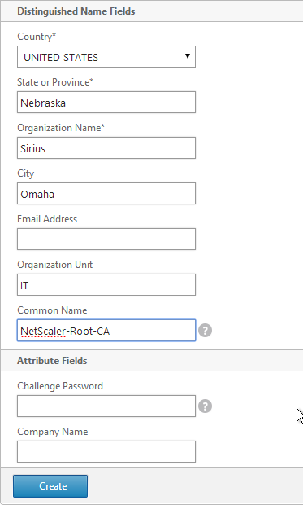
- In the Certificate File Name field, enter root.cer or similar. This is a new file.
- Change the Validity Period to 3650 (10 years) or similar.
- If the key file is encrypted, enter the password in the PEM Passphrase field.
- Click Create.
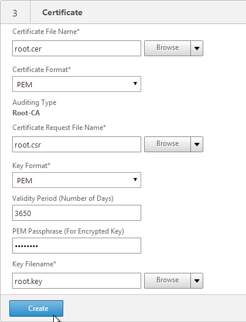
- In the Certificate-Key Pair Name field, enter a friendly name for this Certificate Authority certificate.
- If the key file is encrypted, enter the password in the Password field.
- Click Create.
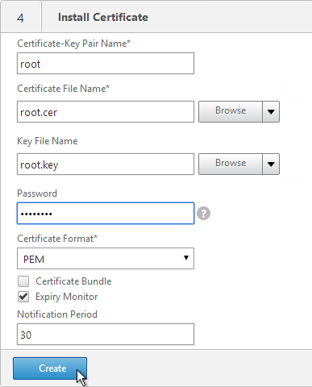
- Click Done.
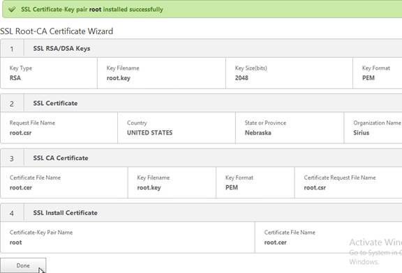
- In the right pane, in the left column, click Server Certificate Wizard.
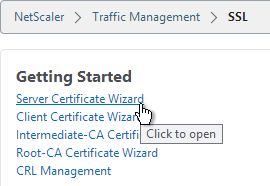
- In the Key Filename field, enter mgmt.key or similar. This is a new file.
- In the Key Size field, enter at least 2048.
- Optionally, to encrypt the key file, change the PEM Encoding Algorithm to DES3, and enter a new password.
- Click Create.
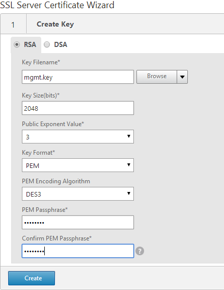
- In the Request File Name field, enter mgmt.csr or similar. This is a new file.
- If the key file is encrypted, enter the password.
- Scroll down.
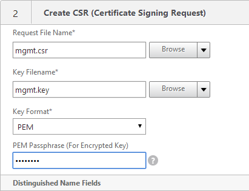
- In the State field, enter the non-abbreviated state name.
- In the Organization Name field, enter the name of your organization.
- Fill in other fields as desired.
- In the Common Name field, enter the hostname (FQDN) of the appliance.
- Click Create.
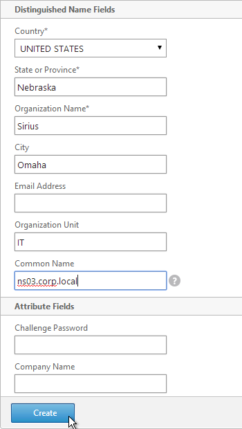
- In the Certificate File Name field, enter mgmt.cer or similar. This is a new file.
- Change the Validity Period to 3650 (10 years) or similar.
- Scroll down.
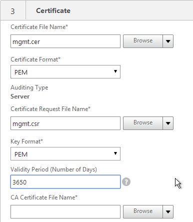
- In the CA Certificate File Name field, browse to the root.cer file.
- In the CA Key File Name field, browse to the root.key file.
- If the key file is encrypted, enter the password.
- In the CA Serial File Number field, enter the name of a new file that will contain serial numbers.
- Click Create.
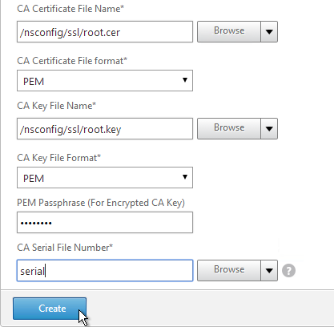
- In the Certificate-Key Pair Name field, enter a friendly name for this management certificate.
- If the key file is encrypted, enter the password in the Password field.
- Click Create.
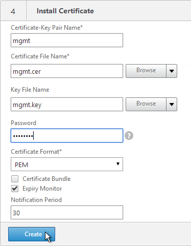
- Click Done.
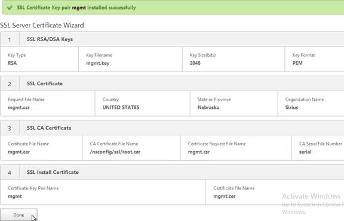
Default Management Certificate Key Length
In older NetScaler builds, the default management certificate (ns-server-certificate) key size is only 512 bits. To see the key size, right-click ns-server-certificate, and then click Details.
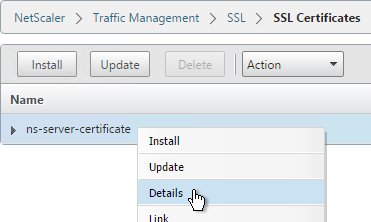

If you try to use Internet Explorer to connect to the NSIP using SSL, Internet Explorer will consider 512 bits to be unsafe and probably won’t let you connect. Notice there’s no option to proceed.

You can configure Internet Explorer to accept the 512-bit certificate by running Certutil ?setreg chain\minRSAPubKeyBitLength 512 on the same machine where Internet Explorer is running.

When you upgrade NetScaler, the management certificate remains at whatever was installed previously. If it was never replaced, then the management certificate is still only 512 bits. To replace the certificate with a new 2048-bit self-signed certificate, simply delete the existing ns-server-certificate certificate files and reboot.
- Go to Traffic Management > SSL.
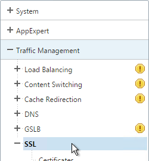
- On the right, in the right column, click Manage Certificates / Keys / CSRs.
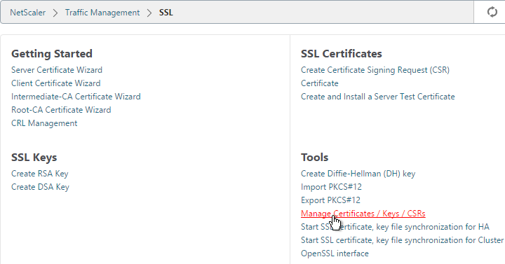
- Highlight any file named ns-* and delete them. This takes several seconds.
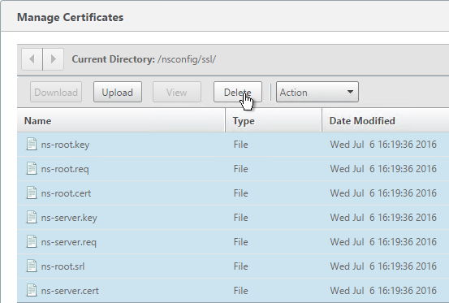
- Then go to System and reboot.
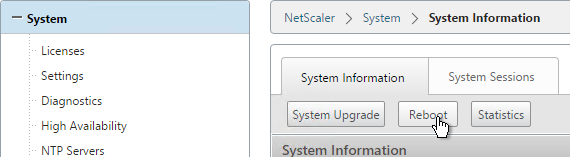
- After a reboot, if you view the Details on the ns-server-certificate, it will be recreated as self-signed with 2048-bit key size.
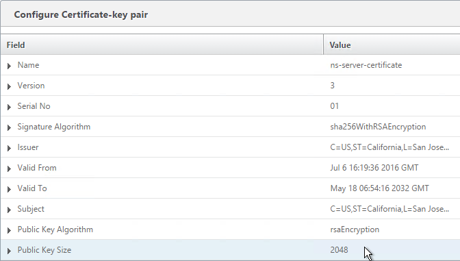
Replace Management Certificate
You can replace the default management certificate with a new trusted management certificate.
Only one certificate will be loaded on both nodes in a High Availability pair so make sure the management certificate matches the names of both nodes. This is easily doable using a Subject Alternative Name certificate. Here are some names the management certificate should match (note: a wildcard certificate won’t match all of these names):
- The FQDN for each node NSIP in a High Availability pair. Example: ns01.corp.local and ns02.corp.local
- The shortnames (left label) for each node NSIP in a High Availability pair. Example: ns01 and ns02
- The NSIP IP address for each node in a High Availability pair. Example: 192.168.123.14 and 192.168.123.29
- If you enabled management access on your SNIPs, add names for the SNIPs:
- FQDN for the SNIP. Example: ns.corp.local
- Shortname for the SNIP. Example: ns
- SNIP IP address. Example: 192.168.123.30
If you are creating a Subject Alternative Name certificate, it’s probably easiest to do the following:
- Create the certificate using the Certificates snap-in on a Windows box. You can add the Subject Alternative Names in the certificate request wizard. The Subject Alternative Names for the IP addresses must be added as IP address (v4). The other Subject Alternative Names are added as DNS.

- Export the certificate and Private Key to a .pfx file.

- On the NetScaler, use the Import PKCS#12 tool to convert the .pfx to PEM format. Then follow one of the procedures below to replace the management certificate.
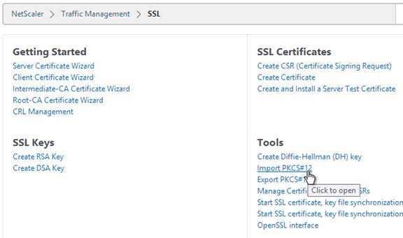
There are two methods of replacing the management certificate:
- Use the Update Certificate button for ns-server-certificate in the NetScaler GUI. This automatically updates all of the Internal Services bindings too.
- You cannot rename the certificate in the NetScaler GUI. It remains as ns-server-certificate.
- If your new management certificate is a wildcard that you need to use for other SSL entities, then you will bind ns-server-certificate to those entities instead of a more descriptive name. You can’t re-upload the wildcard certificate again with a different GUI name.
- Or manually Bind the new certificate to the Internal Services.
Update Certificate Method
The Update Certificate button method is detailed below:
- You can’t update the certificate while connected to the NetScaler using https so make sure you connect using http.
- On the left, expand Traffic Management, expand SSL, and click Certificates.
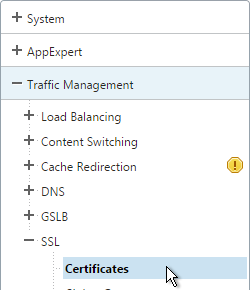
- On the right, highlight ns-server-certificate, and click Update.
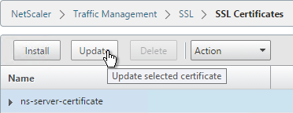
- Check the box next to Click to update the Certificate/Key.
- Browse to the new management certificate. It could be on the appliance or it could be on your local machine.
- Click Yes when asked to update the existing certificate.
- If the PEM certificate is encrypted, enter the password.
- Check the box next to No Domain Check. Click OK.
- You can now connect to the NetScaler using https protocol. The certificate should be valid and it should have a 2048 bit key.

- On the left, expand Traffic Management, expand Load Balancing, and click Services.
- On the right, switch to the Internal Services tab.
- You will see multiple services. Edit one of them.
- On the right, in the Advanced column, click SSL Ciphers.
- On the left, in the SSL Ciphers section, bind a custom cipher group that has RC4 ciphers removed. Click OK.
- Scroll down to the SSL Parameters section, and click the pencil icon.
- Uncheck the box next to SSLv3. NetScaler VPX 10.5 build 57 and newer lets you enable TLSv11 and TLSv12. Click OK.

- Repeat for the rest of the internal services.
Manual Binding Method
The manual Binding to Internal Services method is detailed below:
- You can’t update the certificate while connected to the NetScaler using https so make sure you connect using http.
- On the left, expand Traffic Management, expand SSL, and click Certificates.
- On the right, use the Install button to install the certificate if you haven’t already done so.
- On the right, highlight the new management certificate, open the Action menu, and click Details.
- Verify that the Public Key Size is 2048. Click OK.
- On the left, expand Traffic Management, expand Load Balancing, and click Services.
- On the right, switch to the Internal Services tab.
- You will see multiple services. Edit one of them.
- Scroll down and click where it says 1 Client Certificate.
- Highlight the existing management certificate, and click Unbind.
- Click Yes to remove the selected entity.
- Click Add Binding.
- Click where it says Click to select.
- Select the new management certificate, and click OK.
- Click Bind.
- Click OK.
- On the right, in the Advanced column, click SSL Ciphers.
- On the left, in the SSL Ciphers section, bind a custom cipher group that has RC4 ciphers removed. Click OK.
- Scroll down to the SSL Parameters section, and click the pencil icon.
- Uncheck the box next to SSLv3. NetScaler VPX 10.5 build 57 and newer lets you enable TLSv11 and TLSv12. Click OK.
- Repeat for the rest of the internal services.
Force Management SSL
By default, administrators can connect to the NSIP using HTTP or SSL. This section details how to disable HTTP. Connecting to the NSIP using SSL also causes Java communication to use SSL (TCP 3008).
- Connect to the NSIP using https.
- On the left, expand System, expand Network, and click IPs.
- On the right, highlight your NetScaler IP, and click Edit.
- Near the bottom, check the box next to Secure access only, and then click OK.
- Repeat this on the secondary appliance.
- Repeat for any SNIPs that have management access enabled.
SSL Certificate – Update
If your certificate is about to expire, do the following:
- Create updated certificate files in PEM format. One option is to create a key file and Certificate Signing Request directly on the NetScaler. Another option is to convert a PFX file to a PEM file. Don’t install the certificate yet, but instead, simply have access to the key file and certificate file in PEM format.
- In NetScaler, navigate to Traffic Management > SSL > Certificates.
- On the right, highlight the certificate you intend to update, and click Update.
- Check the box next to Click to update the Certificate/Key.
- Browse to the updated certificate file.
- Click Yes when asked to update the existing certificate.
- Browse to the updated key file.
- If the key file is encrypted, enter the password.
- Check the box next to No Domain Check.
- Click OK. This will automatically update every Virtual Server on which this certificate is bound.
- Certificates can also be updated in Citrix Command Center or NetScaler Management and Analytics System.